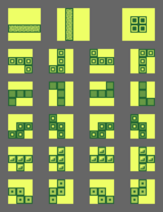
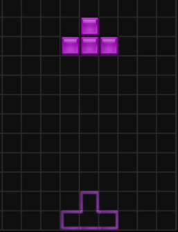
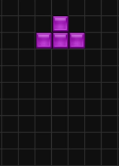

Note: Before 2009, nearly every Tetris scoring system varied from the other. We'll be using the standard scoring system used after 2009.
| Action | Point Value |
|---|---|
| Single/Mini T-Spin | 100 × Level |
| Mini T-Spin Single | 200 × Level |
| Double | 300 × Level |
| T-Spin/Mini T-Spin Double | 400 × Level |
| Triple | 500 × Level |
| B2B (Back-to-Back) Mini T-Spin Double | 600 × Level |
| Tetris/T-Spin Single | 800 × Level |
| B2B T-Spin Single/B2B Tetris/T-Spin Double | 1200 × Level |
| T-Spin Triple | 1600 × Level |
| B2B T-Spin Double | 1800 × Level |
| B2B T-Spin Triple | 2400 × Level |
On console and handheld versions, Tetris made fine use of the D-Pad as players could only move left, right, or down
(to increase the falling speed). Two other buttons are used for rotating left and right.
Versions released since the 90s have a hold button which allows players to hold a single piece for later.
Older versions of Tetris such as the GameBoy and NES versions use the Nintendo Rotation System. The NRS is the first rotation system created, with a left- and right-hand rotation system. A prime comparison of this can be seen from the two versions mentioned above.
|

Left-hand Rotation (GameBoy) |

Right-hand Rotation (NES) |
Newer versions have the Super Rotation System (SRS). Core mechanics were introduced that made the game more fluid and forgiving to play.
When at the very bottom or touching a piece, there period where the piece may be moved before locking was significantly increased.

Lock Delay with SRS |

No Lock Delay (NRS) |
If a piece slides along a wall, even without enough room, the game will make enough space so that the piece will rotate.

Wall Kick |

No Wall Kick (I swear I'm mashing the buttons!) |
Instead of holding down to quicken the falling speed of a piece, it can be immediately dropped into a spot. (Usually UP on the D-Pad.)

A shadow of where the piece will drop appears.
|

Ghost Piece |

No Ghost Piece |